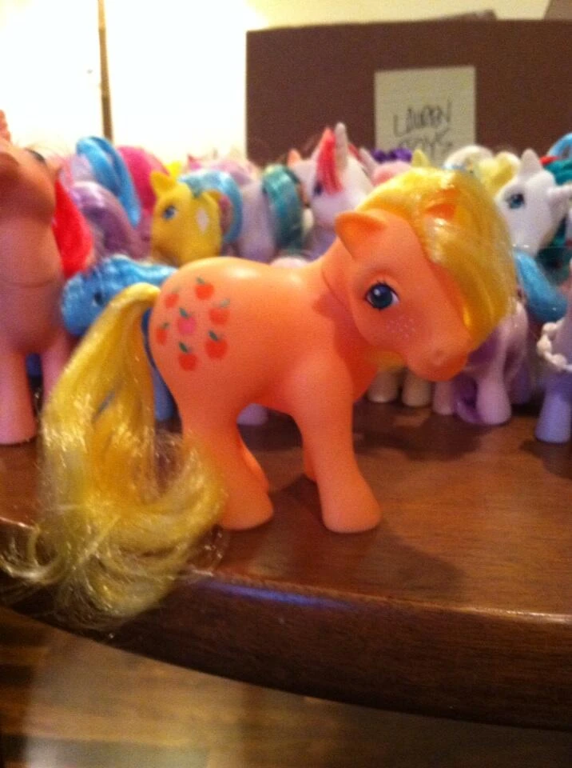
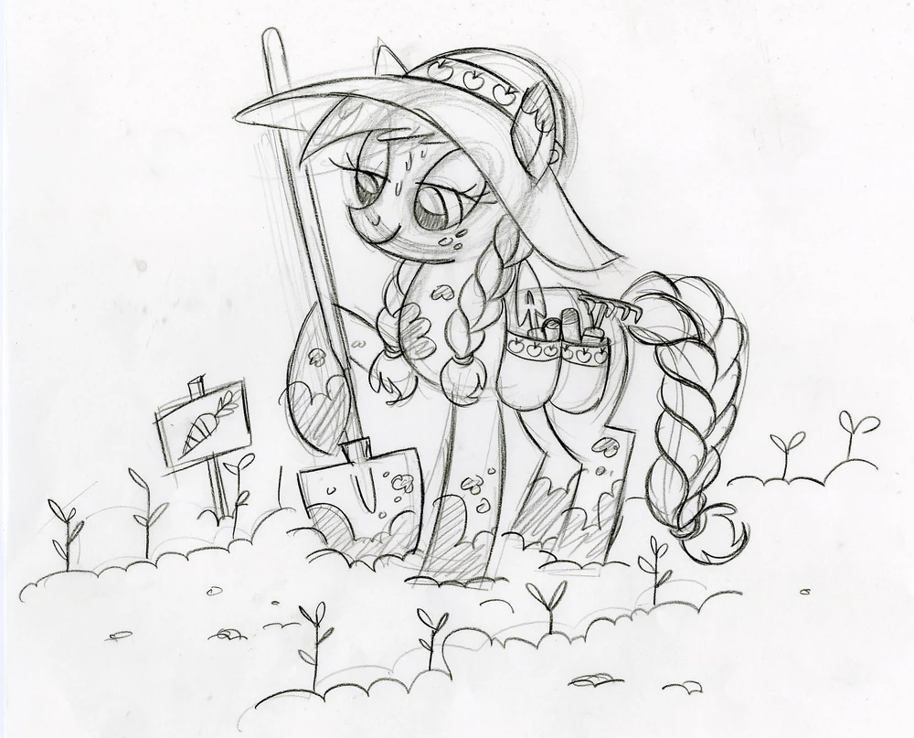
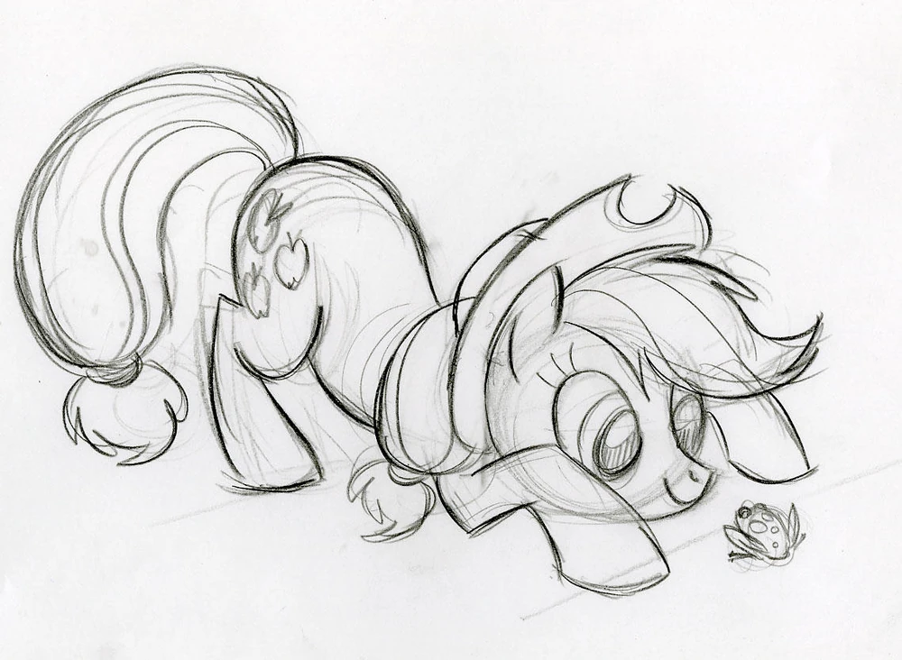
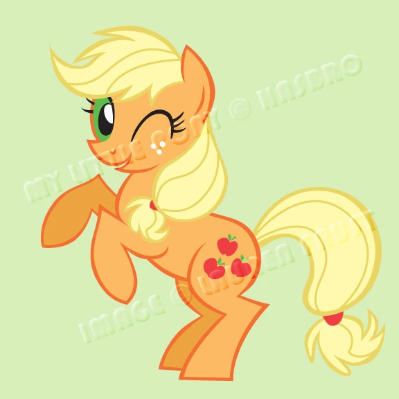

✧ Era una granjera en Ponyville, y trabajaba en una granja de manzanas llamada Sweet Apple Acres.
Es muy trabajadora y honesta, literalmente nunca miente. Quiere mucho a su familia, los apples. Su cutie mark son tres manzanas rojas que representan su talento en la agricultura y su amor por las manzanas.
El elemento de la armonía que ella representa es el de la honestidad.
Su voz en inglés es hecha por Ashleigh Ball (Igual que la de Rainbow) y en latino es doblada por Claudia Motta
Para Applejack, Lauren se basó en el personaje de la G1 homónimo. Como se puede ver, mucho cambio no hubo xd:
|  |  |
|  |  |